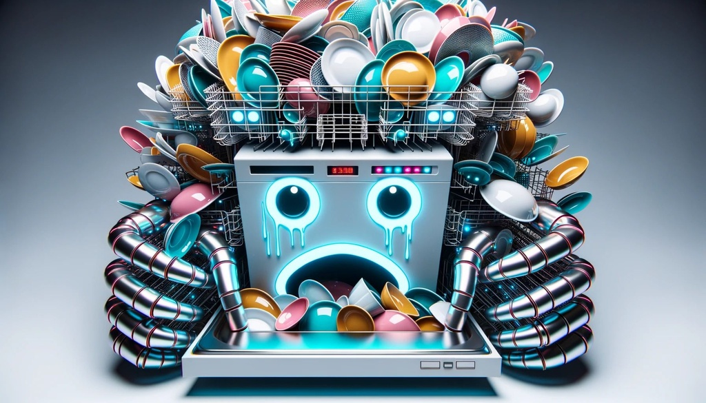
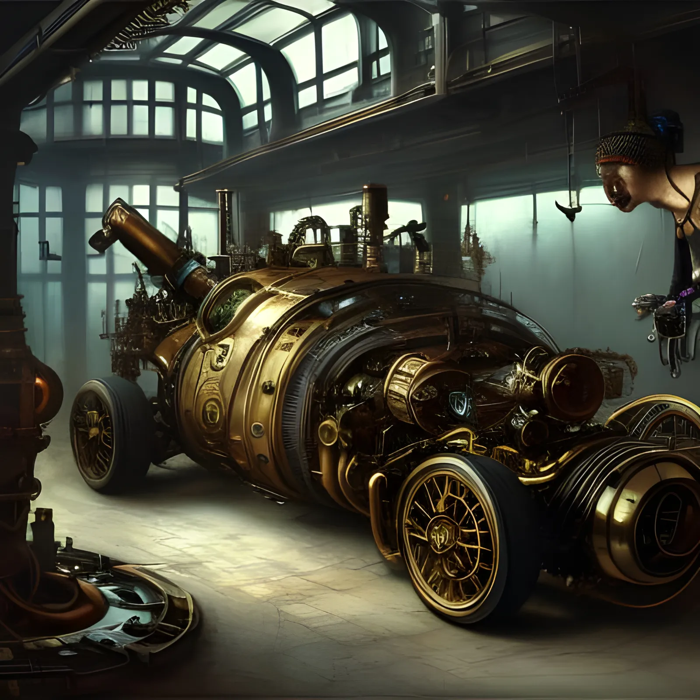
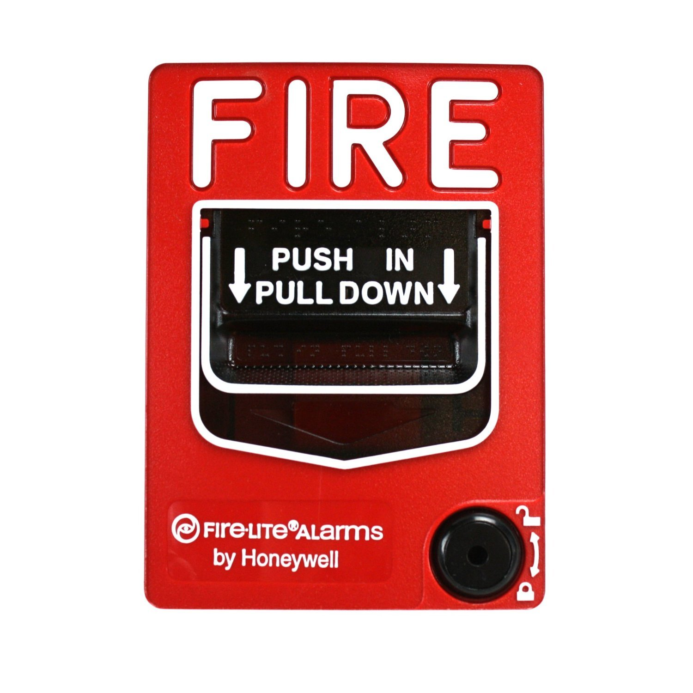

what is the best feeling after a long day. It has to be coming back to a clean and well kept house.
Aluminum wedge + dishwasher

Are you tired of those dishes ?? The aluminum dishwasher is made to help with thoses dirty dishes
Robot mice- dirt/dusting
Have you ever wanted a cleaner house. look no more the robot cleaning mice are the best option for a clean home.
Incinerator

Have you ever thrown a big party and have alot of extra trash leftover and needed it gone.look no more we have a icinerator.
Fire alarm: Warning lights/voice

Fire alarms are crucial for early detection of smoke or fire, providing vital alerts that can save lives and prevent property damage. They also facilitate a prompt response from emergency services, ensuring a quicker and more effective resolution to fire emergencies.
Water: Ceiling walls
People should consider buying a water ceiling because it offers an innovative way to cool and humidify indoor spaces, creating a more comfortable environment. Additionally, it can lead to energy savings by reducing the need for traditional air conditioning systems, promoting both efficiency and sustainability.
Water rats
Safe and Low Maintenance: Unlike live pets, robotic water rats dont require feeding or special habitat care, making them easier to manage
Robots-green chemical
People might buy a robot that shoots acid for its novelty as a unique gadget or tool in specialized industries, such as cleaning or chemical application, where precision and effectiveness are paramount.
20 snakes venom green froth
People might be interested in a green robot snake that shoots out "venom" (assuming it's a safe, non-toxic substance) for its thrilling novelty, offering an exciting interactive experience, a unique conversation starter,